徒然：GW にやったこと
公開日：
4月26日（火曜日）
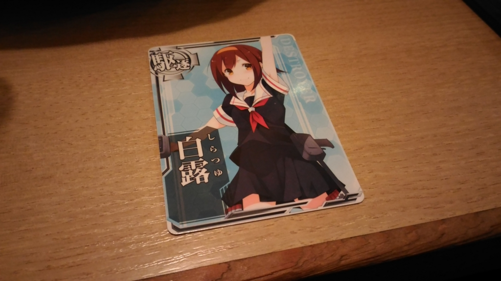
飛行機で夜に松山 → 成田。GW を外した＋セール運賃おかげで、Plus 料金にしたにもかかわらず往復9,000円程度で済んだ。
9時ごろに成田に着き、そのまま家に帰っておとなしく寝るつもりだったが、@shibayan に誘われて市川でちょっと飲む。アーケード版艦これの「白露」をもらった(＾ω＾)
4月27日（水曜日）
家で仕事。久しぶりに母ちゃんと長々としゃべった。
4月28日（木曜日）
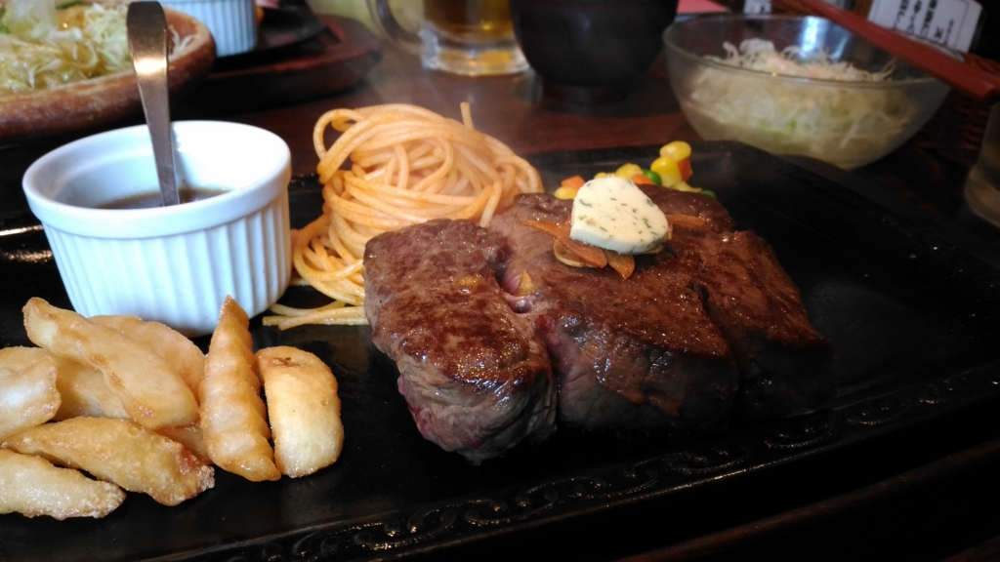
昼、母と伯母同伴で カタヤマ へステーキを食べに行く。
ここは「駄敏丁カット」という安いお肉をおいしくカットする技術（特許があるらしい）で有名なお店で、母が若い頃にバイトをしていた店でもある。
そのあとは家で仕事。夜、小岩へ飲みに出かける。
4月29日（金曜日）
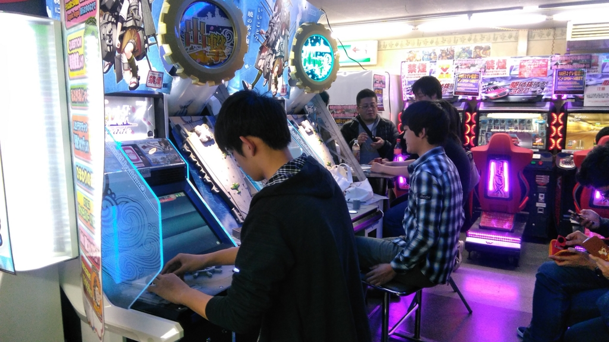
何もしない日にした。昼から小岩のゲームセンターへアーケード版艦これをしにいったが、人が多かったのであきらめて帰った。ゲームセンターは行き慣れないので、ほかのゲームをしようにも勝手がわからない。
4月30日（土曜日）
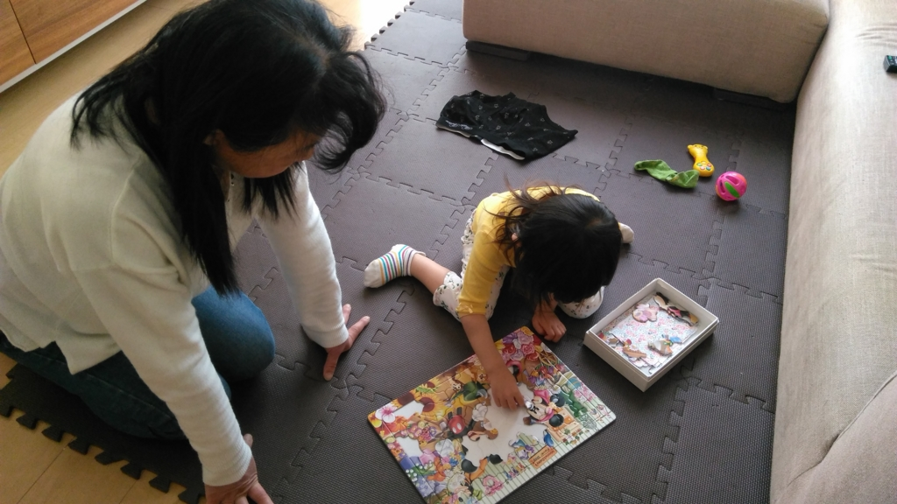
妹の家に招待され、オムそばをいただいた。意外に作るのがうまくてびっくりした。コツを伝授していただく。
あと、家の前で姪っ子と遊んだ。すると、近所のガキがわらわらと集まってきて、その相手までする羽目に。片手でバスケットボール、片手でシャボン玉を飛ばすという獅子奮迅の活躍で、危うく死にかけた。この功績により、ガキどもから「聖なるおじさん」の称号をいただく。
帰り、ヴィッツのバッテリーが上がったので（トヨタを売っている義弟に応急処置してもらう）、手近の販売店でバッテリーを交換してもらう。おかんが来店者特典のウェットティッシュを何袋ももらおうとするのに閉口したが、これが数日後大変役にたった。どや顔されてウザかった。
5月1日（日曜日）
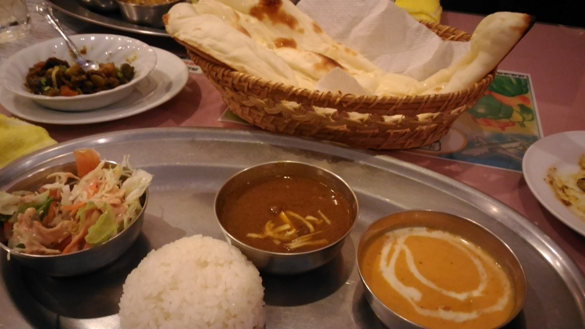
N 氏と小岩のカレー屋さんでお昼ご飯を食べた。バターミルクというのがおいしかったかも。夜のメニューも食べてみたい店かも？
5月2日（月曜日）
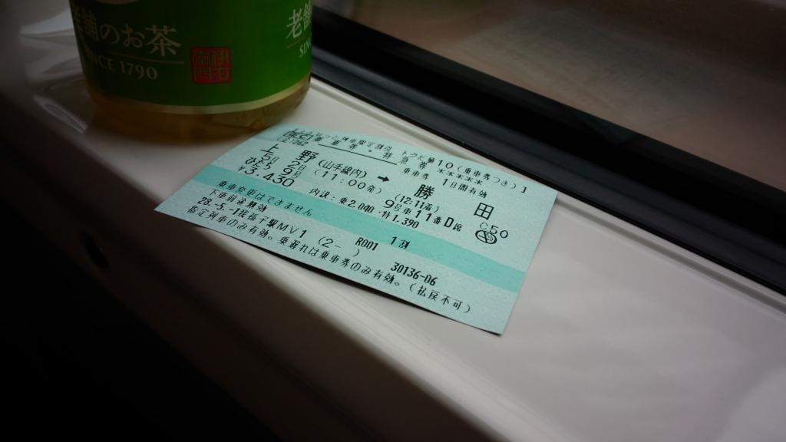
おっさん四人でガルパン旅行に行く。悲劇だ。
5月3日（火曜日）
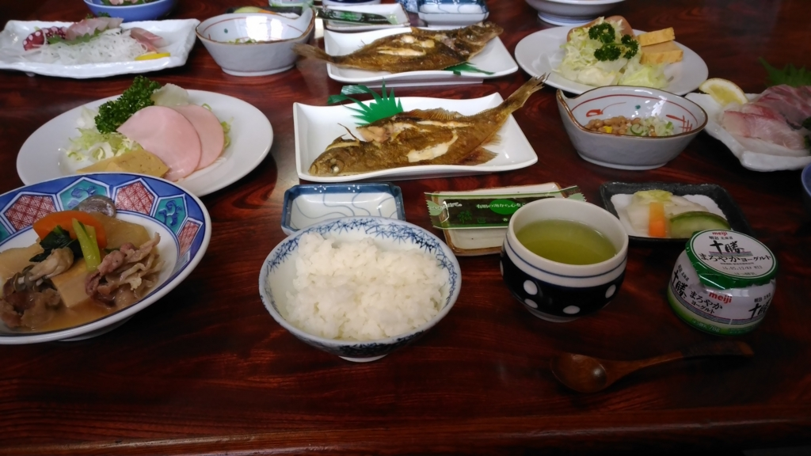
ガルパン旅行2日目。朝ごはんがよかったけれど、食べすぎたせいで昼飯が食べられなかった。鹿島神宮にも寄る。この辺りはまた別の機会に。
5月4日（水曜日）
幕張で弟1号夫妻、弟2号夫妻と会う。中華屋で会食して解散。弟2号夫妻は出産間近で、運がよければ（早産になるので運が悪いかもしれないが）赤ちゃんの顔を見られたのだけど、叶わず。順調のようで安心した。
5月5日（木曜日）
母方の祖父の墓参りで、ひたちの方までクルマを運転した。高速道路にのるのは8カ月ぶりぐらいだったけど、ちゃんと生きて帰ってこれた。
東京のおじいちゃんは創価学会の人で（自分は学会にはまったく関係ないが）、お墓が規格化されていたのが印象的。国連の戦没者墓地みたいに、同じ大きさ・形のお墓が広がっている（戦没者墓地の方は十字架と六芒星が混じっていて、もうちょっとバラエティがあるけど）。創価学会のことはよく知らないが、平等思想のあらわれなんだろうか？ 自分はあまり宗教に興味はないが、他人に迷惑をかけないならば、そういう思想をもつのは大変結構なことだと思う。
午後3時ぐらいに東京へ戻り、祖母宅のそばの焼肉屋さんへ行く。ここも叔母がかつてバイトをしていたところだったそうな。このあたりは母方の家系のテリトリーなので、どこへいってもなんかしら縁がある。伯母を送って祖母宅へ寄ると、祖母もいたので少し挨拶をした。
5月6日（金曜日）
ちょっと働いた。さすがに10連休は、月曜日の社会復帰が厳しくなる。
5月7日（土曜日）
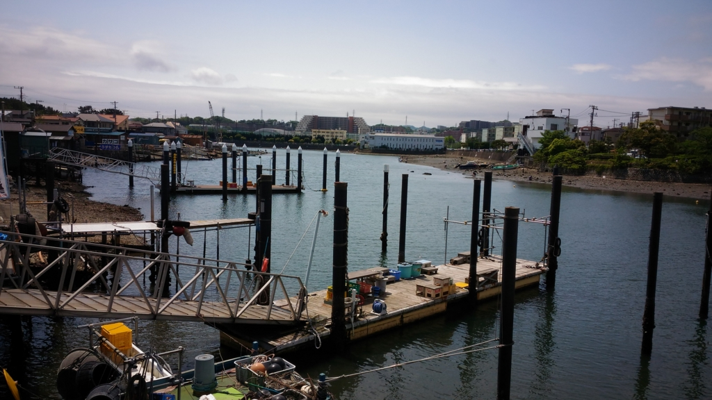
中学時代からの友人と、金沢八景の向こうにある野島公園というところでバーベキューを楽しんだ。正直なところ、焼肉屋でぐでーっとビールを飲みながら肉をつつく方が好きなのだが（後片付けもお店の人がやってくれるしな！）、子どもとやるのは楽しい。天気も良くて、たまにはこういうのもいいなって思った。というか、またやりたい。
でも、独身で家族に混じるのは精神的に厳しくなってきたな（白目
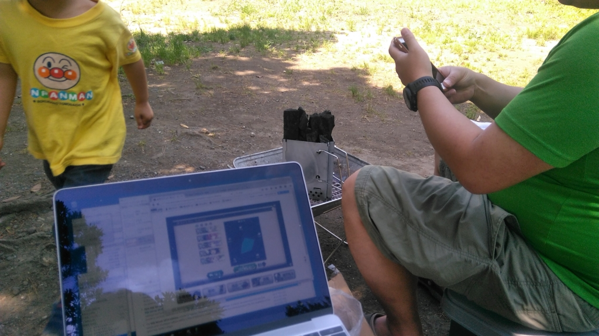
あと、36歳の誕生日ブログを少し心配されたけど、あれは単なる人生の一局面であって、それほど本人は深刻になっていないし、むしろ毎日楽しく生きているので安心してほしい。誰しも、ちょっとした悩みぐらいは抱えているが、自分はそれをあまり隠さないで誰にでも喋ってしまうだけの話だ。それがまた、自分の楽しく生きるコツでもある。イヤなことだって、文章にして読み返してしまうと、たいしたことではないと感じられる。
5月8日（日曜日）
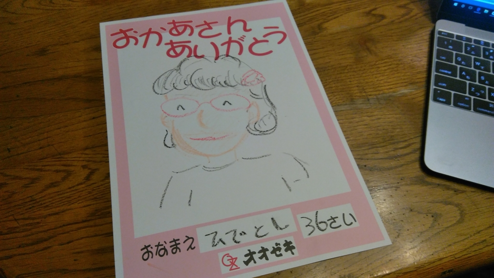
妹が息子・娘を連れて実家に来襲してきた。旦那の助けもなしに、ほんとうにバイタリティのある子だと思う。口は悪いが、たまにしか会えない兄と時間を作ってくれるのはうれしい。
お寿司おいしかった。
5月9日（月曜日）
実家で仕事した。社会復帰が辛すぎて、死ぬかと思った。
夜はそとで飲んだ。ちょっと飲み足りなかったので、小岩に寄ってまた飲んだ。名残惜しいが、東京はとりあえずこの日が最後。
5月10日（火曜日）
早朝、実家を出て、飛行機で成田 → 松山。乗り換えなしでのんびり行きたかったので、JR 総武快速のグリーン車に乗った。京成のほうがちょっと早いけど、こっちのほうが楽だわ。
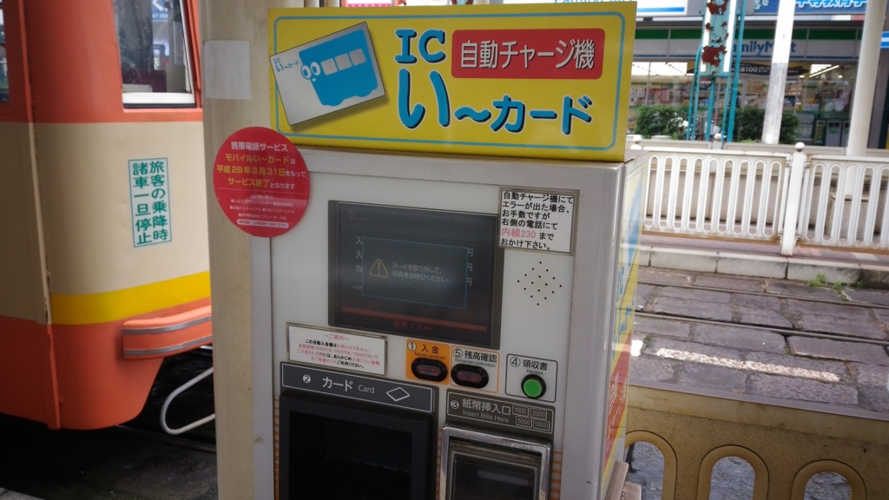
松山市駅によって いよてつ IC い～カード をチャージしようとしたら、札がジャムった。カードで決済させてほしいな……。係員の人を内線で呼び出して直してもらったけど、対応が丁寧でうれしかった。
ちなみに、電車を降りるときにも IC カードのエラーで下車できなかった。たぶん、チャージのときのトラブルが原因だと思う。ふぁー
割とゆとりをもって休みを取ったはずだったのに、あっという間の GW だった。ほかにも会いたい人はたくさんいたんだけど、会えなくて残念だったかも。まぁ、次の機会にでも。
おわり。